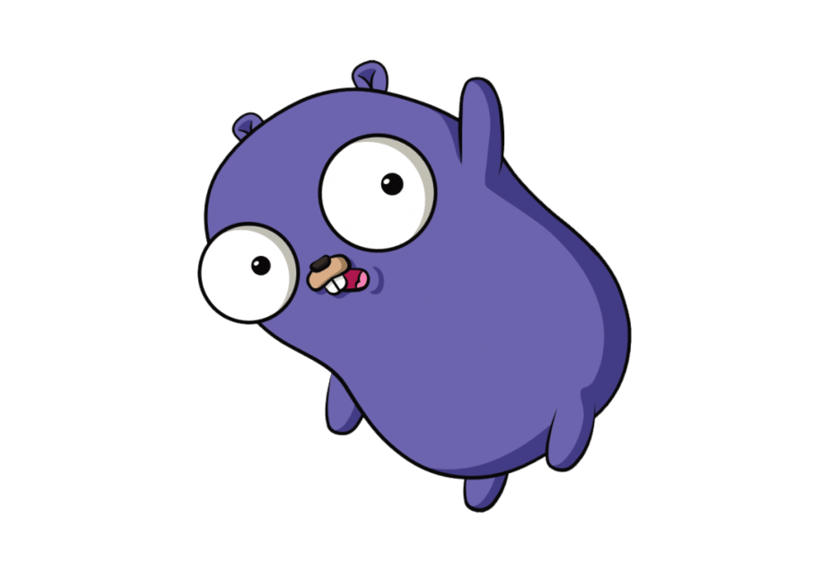

Язык программирования Golang
Go (часто также golang) — компилируемый многопоточный язык программирования, разработанный внутри компании Google[8]. Разработка Go началась в сентябре 2007 года, его непосредственным проектированием занимались Роберт Гризмер, Роб Пайк и Кен Томпсон[9], занимавшиеся до этого проектом разработки операционной системы Inferno. Официально язык был представлен в ноябре 2009 года. На данный момент поддержка официального компилятора, разрабатываемого создателями языка, осуществляется для операционных систем FreeBSD, OpenBSD, Linux, macOS, Windows, DragonFly BSD, Plan 9, Solaris, Android, AIX.[10]. Также Go поддерживается набором компиляторов gcc, существует несколько независимых реализаций. Ведётся разработка второй версии языка.
Немножко истории(только самое основное)
| Версия | Когда | Что случилось |
|---|---|---|
| 1 | 28 марта 201 | Первая официальная версия; зафиксированы библиотеки, внесены изменения в синтаксис. |
| 1.4 | 10 декабря 2014 | разрешена конструкция цикла «for range x { … }» (цикл по коллекции без использования переменных), запрещено двойное автоматическое разыменование при вызове метода |
| 1.7 | 16 августа 2016 | уменьшены время компиляции и размер бинарных файлов, увеличена скорость работы и в стандартную библиотеку добавлен пакет context |
| 1.9 | 24 августа 2017 | добавлены в язык псевдонимы имён типов, уточнены некоторые моменты использования операций с плавающей точкой, оптимизирован инструментарий, дополнение библиотек, в частности — потоково-безопасный тип map |
| 1.14 | 25 февраля 2020 | расширено определение включения интерфейсов: теперь разрешено включать несколько интерфейсов, имеющих одноимённые методы с идентичными сигнатурами |
| 1.16 | 16 февраля 2021 года | добавлена поддержка 64-bit ARM под macOS и NetBSD, MIPS64 под OpenBSD, улучшена реализация для ряда архитектур, в том числе RISC-V |
С 2017 идет разработка следующей базовой версии языка "Go 2.0"
Существует несколько компиляторов и надстроек над ними:
- gc
- gccgo
- llgo
- gollvm
- TinyGo
Особенности языка
- Go — язык со строгой статической типизацией. Доступен автоматический вывод типов, для пользовательских типов — «утиная типизация».
- Полноценная поддержка указателей, но без возможности применять к ним арифметические операции, в отличие от C/C++/D.
- Строковый тип со встроенной поддержкой юникода.
- Использование динамических массивов (срезов), хеш-таблиц (словарей), вариант цикла для обхода коллекции.
- Средства функционального программирования: неименованные функции, замыкания, передача функций в параметрах и возврат функциональных значений.
- Автоматическое управление памятью со сборщиком мусора.
- Средства объектно-ориентированного программирования ограничиваются интерфейсами
- Полиморфное поведение обеспечивается реализацией интерфейсов типами
Примеры кода
package main
import "fmt"
func> main() {
fmt.Println("Hello, World!")
}
package main
import (
"fmt"
"database/sql"
w "os"
. "math"
_ "gopkg.in/goracle.v2">
)
func main() {
for _, arg := range w.Args {
fmt.Println(arg)
}
var db *sql.DB = sql.Open(driver, dataSource)
x := Sin(1.0)
}
Теги, которые использовались: p, a, b, br, div, span, ul, ol, li, pre, img, h1, h2, h3, hr.
Css свойства: width, font-size, padding-left, padding-right, line-height, padding-top, font-family, margin-top, margin-bottom, background-color, float, margin, scroll-behavior, color, src.